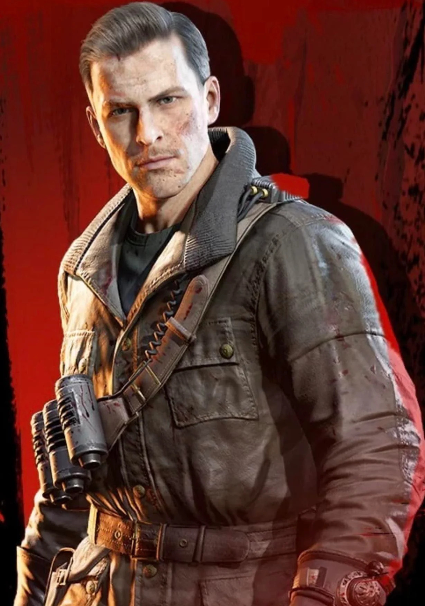

Tank Dempsey es el primer personaje del Modo Zombie. Dempsey fue capturado en un punto por los japoneses, y logró escapar de ellos tras escapar de su celda de bambú, y acabar con todos sus captores usando una horquilla y su Medalla de Honor. Dempsey está basado en el estereotipo del héroe de guerra exagerado, y es visto por sus compañeros como un idiota (Por su baja inteligencia), aunque esto no es obstáculo a la hora de luchar contra los zombies. Se desconoce su paradero después de los acontecimientos de la Luna (Moon).